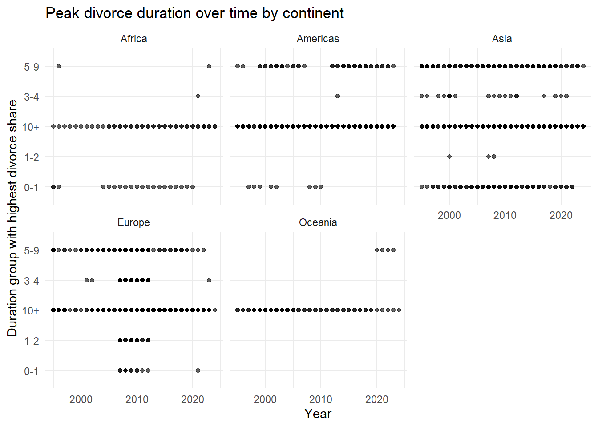
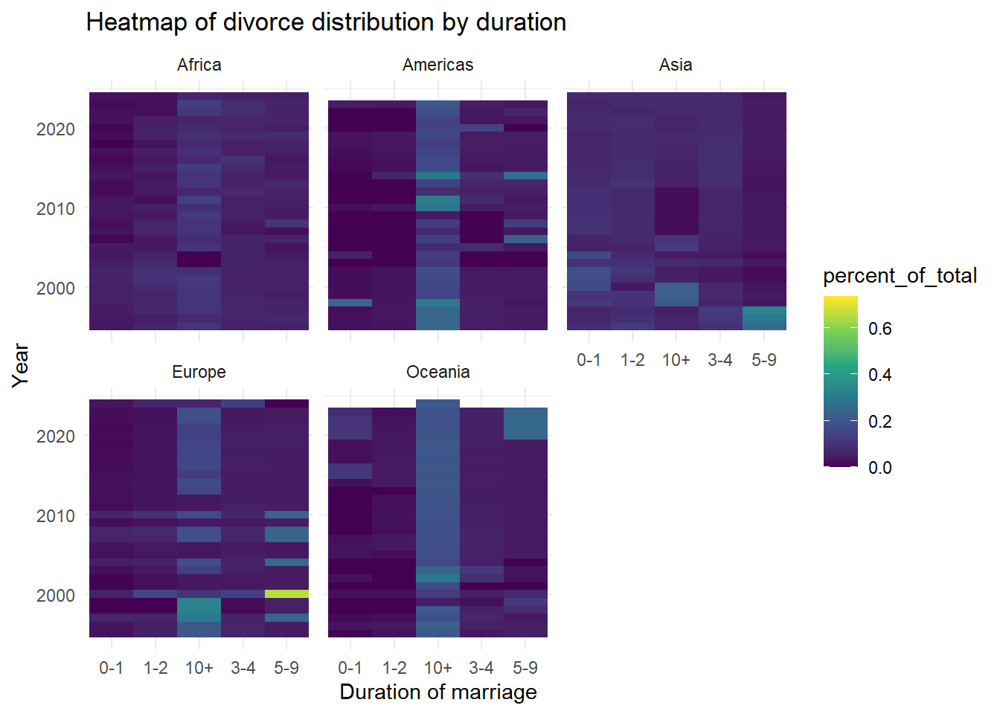
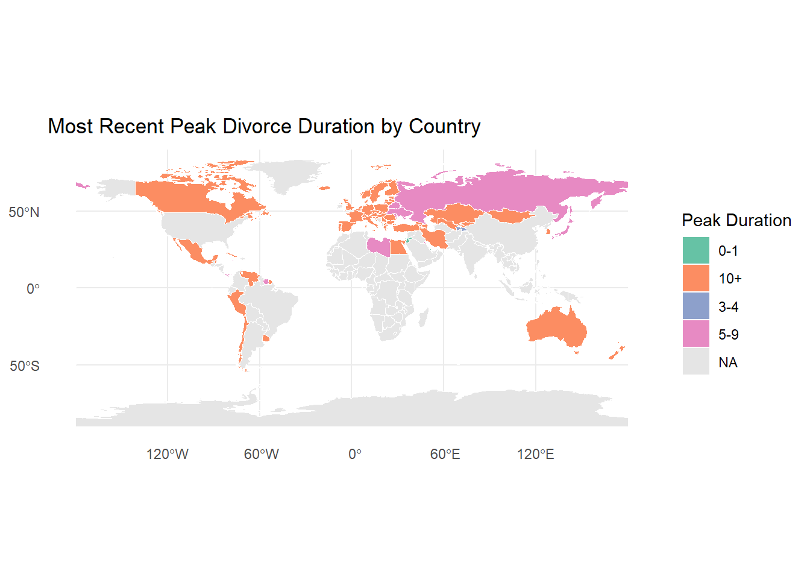
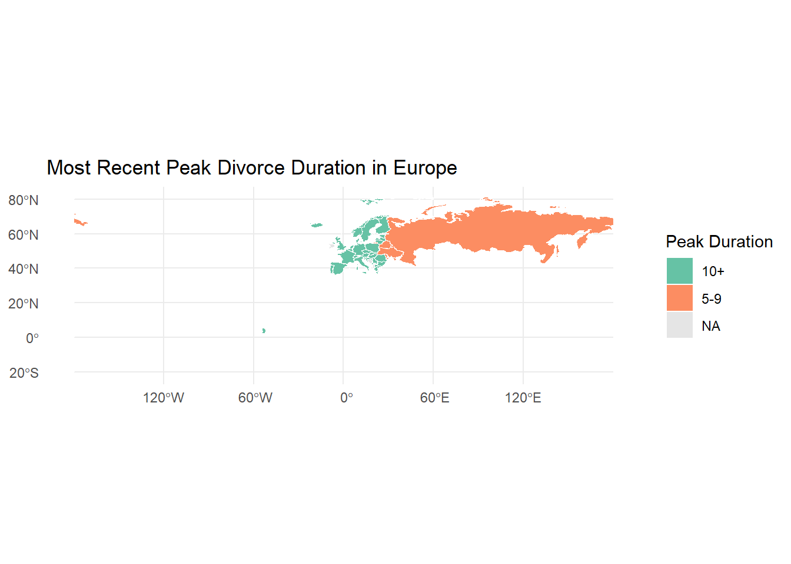
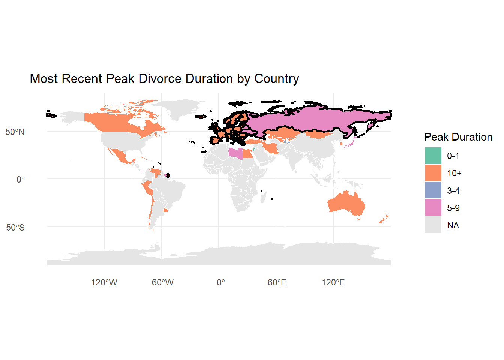

library(tidyverse)── Attaching core tidyverse packages ──────────────────────── tidyverse 2.0.0 ──
✔ dplyr 1.2.0 ✔ readr 2.2.0
✔ forcats 1.0.1 ✔ stringr 1.6.0
✔ ggplot2 4.0.2 ✔ tibble 3.3.1
✔ lubridate 1.9.5 ✔ tidyr 1.3.2
✔ purrr 1.2.1
── Conflicts ────────────────────────────────────────── tidyverse_conflicts() ──
✖ dplyr::filter() masks stats::filter()
✖ dplyr::lag() masks stats::lag()
ℹ Use the conflicted package (<http://conflicted.r-lib.org/>) to force all conflicts to become errorslibrary(janitor)
Attaching package: 'janitor'
The following objects are masked from 'package:stats':
chisq.test, fisher.testlibrary(countrycode)Warning: package 'countrycode' was built under R version 4.5.3library(stringr)
library(sf)Linking to GEOS 3.13.1, GDAL 3.11.4, PROJ 9.7.0; sf_use_s2() is TRUElibrary(rnaturalearthdata)Warning: package 'rnaturalearthdata' was built under R version 4.5.3library(rnaturalearth)Warning: package 'rnaturalearth' was built under R version 4.5.3
Attaching package: 'rnaturalearth'
The following object is masked from 'package:rnaturalearthdata':
countries110divorce_data <- read_csv("data/UNdata_Export_20260528_021328529.csv")Warning: One or more parsing issues, call `problems()` on your data frame for details,
e.g.:
dat <- vroom(...)
problems(dat)Rows: 39560 Columns: 9
── Column specification ────────────────────────────────────────────────────────
Delimiter: ","
chr (6): Country or Area, Year, Area, Duration of marriage, Record Type, Rel...
dbl (2): Source Year, Value
num (1): Value Footnotes
ℹ Use `spec()` to retrieve the full column specification for this data.
ℹ Specify the column types or set `show_col_types = FALSE` to quiet this message.# ------------------------
# Cleaning the data
# ------------------------
divorce_data <- divorce_data |>
clean_names() |>
mutate(
duration_of_marriage = str_trim(duration_of_marriage),
year = str_trim(year)
) |>
# keep only valid years to remove the footnotes
filter(str_detect(year, "^[0-9]{4}$"))
# Step 1: keep ALL total rows, but rank them by quality
totals <- divorce_data |>
filter(duration_of_marriage == "Total") |>
mutate(
quality_rank = case_when(
reliability == "Final figure, complete" ~ 1,
record_type == "Data tabulated by year of occurrence" ~ 2,
record_type == "Data tabulated by year of registration" ~ 3,
TRUE ~ 4
)
) |>
arrange(country_or_area, year, quality_rank) |>
group_by(country_or_area, year) |>
slice(1) |> # <-- ALWAYS keep only the best single row
ungroup() |>
select(country_or_area, year, total_value = value)
# Step 2: keep duration categories only
details <- divorce_data |>
filter(!duration_of_marriage %in% c("Total", "Not stated"))
# Step 3: join totals back in
clean_divorce <- details |>
left_join(totals, by = c("country_or_area", "year")) |>
mutate(
percent_of_total = value / total_value,
continent = countrycode(country_or_area, "country.name", "continent")
) |>
# Keep only recent 30 years
filter(as.numeric(year) >= 1995)
# Observe the variety in duration of marriage buckets
duration_bucket <- clean_divorce |>
distinct(duration_of_marriage) |>
arrange(duration_of_marriage)
clean_divorce <- clean_divorce |>
mutate(
# Extract all numbers from the bucket (handles "1", "1-3", "10 +", "Less than 5")
nums = str_extract_all(duration_of_marriage, "\\d+"),
nums = lapply(nums, as.numeric),
# Determine the maximum number in the bucket
max_years = sapply(nums, function(x) if(length(x) == 0) NA else max(x)),
# Standardise into global bins
duration_std = case_when(
str_detect(duration_of_marriage, "Less") ~ "0-1",
max_years <= 1 ~ "0-1",
max_years <= 2 ~ "1-2",
max_years <= 4 ~ "3-4",
max_years <= 9 ~ "5-9",
max_years >= 10 ~ "10+",
TRUE ~ NA_character_
)
) |>
select(-nums, -max_years)
# Observe the country names before matching with the world shapefile
clean_divorce |>
distinct(country_or_area) |>
arrange(country_or_area)# A tibble: 93 × 1
country_or_area
<chr>
1 Antigua and Barbuda
2 Armenia
3 Aruba
4 Australia
5 Austria
6 Azerbaijan
7 Bahamas
8 Barbados
9 Belarus
10 Belgium
# ℹ 83 more rowsworld <- ne_countries(scale = "medium", returnclass = "sf")
world_names <- world |>
st_drop_geometry() |>
select(name)
mismatch <- clean_divorce |>
distinct(country_or_area) |>
anti_join(world_names, by = c("country_or_area" = "name"))
# Build the lookup table in R
name_fix <- tribble(
~country_or_area, ~name,
"Brunei Darussalam", "Brunei",
"China, Macao SAR", "Macau",
"Iran (Islamic Republic of)", "Iran",
"Netherlands (Kingdom of the)", "Netherlands",
"Republic of Korea", "South Korea",
"Republic of Moldova", "Moldova",
"Russian Federation", "Russia",
"State of Palestine", "Palestine",
"Türkiye", "Turkey",
"United Kingdom of Great Britain and Northern Ireland", "United Kingdom",
"Venezuela (Bolivarian Republic of)", "Venezuela"
)
# Apply to fixes
analysis_ready <- clean_divorce |>
left_join(name_fix, by = "country_or_area") |>
mutate(
country = if_else(is.na(name), country_or_area, name)
) |>
select(-name, -country_or_area) |>
relocate(country)
# ------------------------
# Possible plots
# ------------------------
# Identify the peak divorce duration per year
peak_duration <- analysis_ready |>
group_by(country, year) |>
slice_max(percent_of_total, n = 1) |>
ungroup()
# Plot the peak duration over time, Compare continents
ggplot(peak_duration,
aes(x = as.numeric(year), y = duration_std)) +
geom_point(alpha = 0.6) +
facet_wrap(~continent) +
theme_minimal() +
labs(
title = "Peak divorce duration over time by continent",
x = "Year",
y = "Duration group with highest divorce share"
)
# Heatmap
ggplot(analysis_ready,
aes(x = duration_std, y = as.numeric(year), fill = percent_of_total)) +
geom_tile() +
facet_wrap(~continent) +
scale_fill_viridis_c() +
theme_minimal() +
labs(
title = "Heatmap of divorce distribution by duration",
x = "Duration of marriage",
y = "Year"
)
# Continent-level summary table - In each continent, which duration of marriage most often had the highest share of divorces?
continent_peak_summary <- peak_duration |>
count(continent, duration_std, sort = TRUE) |>
group_by(continent) |>
mutate(
total = sum(n),
percent = n / total
) |>
ungroup()
continent_peak_summary |> arrange(desc(percent))# A tibble: 20 × 5
continent duration_std n total percent
<chr> <chr> <int> <int> <dbl>
1 Oceania 10+ 71 75 0.947
2 Americas 10+ 196 253 0.775
3 Africa 10+ 51 74 0.689
4 Europe 10+ 429 637 0.673
5 Asia 10+ 228 434 0.525
6 Africa 0-1 20 74 0.270
7 Asia 5-9 113 434 0.260
8 Americas 5-9 48 253 0.190
9 Asia 0-1 71 434 0.164
10 Europe 5-9 99 637 0.155
11 Europe 3-4 72 637 0.113
12 Oceania 5-9 4 75 0.0533
13 Asia 3-4 19 434 0.0438
14 Europe 1-2 25 637 0.0392
15 Americas 0-1 8 253 0.0316
16 Africa 5-9 2 74 0.0270
17 Europe 0-1 12 637 0.0188
18 Africa 3-4 1 74 0.0135
19 Asia 1-2 3 434 0.00691
20 Americas 3-4 1 253 0.00395# The the most recent peak for each country to see whether countries in the same continent has the same trend
recent_peak <- peak_duration |>
group_by(country) |>
slice_max(as.numeric(year), n = 1) |>
ungroup()
map_data <- world |>
left_join(recent_peak, by = c("name" = "country"))
ggplot(map_data) +
geom_sf(aes(fill = duration_std), color = "white", size = 0.1) +
scale_fill_brewer(palette = "Set2", na.value = "grey90") +
theme_minimal() +
labs(
title = "Most Recent Peak Divorce Duration by Country",
fill = "Peak Duration"
)
europe <- world |> filter(continent == "Europe")
europe_map <- europe |> left_join(recent_peak, by = c("name" = "country"))
ggplot(europe_map) +
geom_sf(aes(fill = duration_std), color = "white", size = 0.1) +
scale_fill_brewer(palette = "Set2", na.value = "grey90") +
theme_minimal() +
labs(
title = "Most Recent Peak Divorce Duration in Europe",
fill = "Peak Duration"
)
europe_outline <- world |>
filter(continent == "Europe") |>
st_combine() |>
st_as_sf()
ggplot(map_data) +
geom_sf(aes(fill = duration_std), color = "white", size = 0.1) +
geom_sf(data = europe_outline, fill = NA, color = "black", size = 0.8) + # <-- outline
scale_fill_brewer(palette = "Set2", na.value = "grey90") +
theme_minimal() +
labs(
title = "Most Recent Peak Divorce Duration by Country",
fill = "Peak Duration"
)